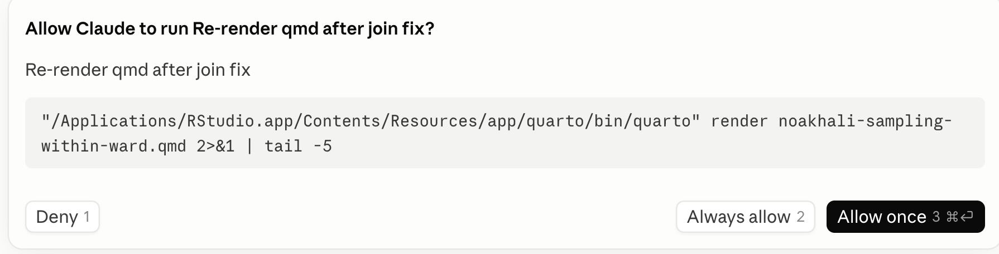
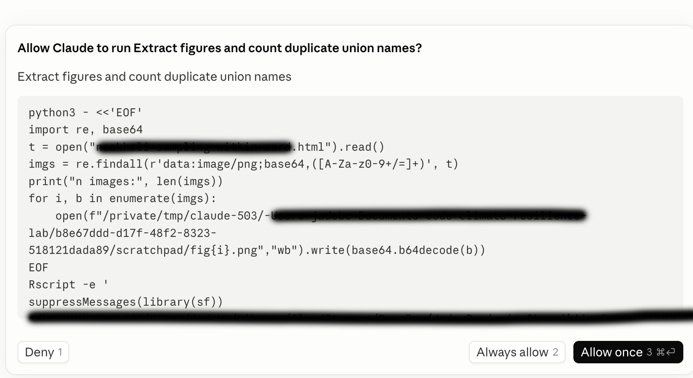

Chapter 6 Using generative AI to code
By Jade Benjamin-Chung and Anna Nguyen
AI can be enormously useful in writing code for research. Currently, there are two main ways to use it, and the distinction is important:
- Chat-based help: asking a chatbot to explain a function or debug a pasted error in an app or website. You copy/paste code back and forth. If data is ever provided to it, it must be manually uploaded. You have a high degree of agency over data access and what code to run, when, and where.
- Agentic coding tools run directly in your terminal or code editor (e.g., RStudio), can read and edit files across your project, execute code, run tests, and iterate on its own output — all with a degree of autonomy that you grant it. It can plan a multi-step task, write and execute code across several files, install packages, and run analyses with minimal intervention. This is powerful, but it also means more can happen without your direct review at each step. That’s why coding with these tools is called “vibe coding”. Agentic tools include Claude Code, Codex, Gemini CLI, Cursor, and Github Co-Pilot.
Both modes are useful, but they each pose different risks to learning and to research safety and accuracy. This chapter includes our Lab Policy on use of AI in Research and then discusses the rationale.
6.1 Benjamin-Chung Lab Policy on use of AI in Research
Lab members must use Stanford-licensed enterprise AI tools (Claude for Education, ChatGPT Edu, Gemini Enterprise) for all research-related work involving lab data, code, or drafts. These tools carry Stanford’s data protection and institutional agreements; personal/free-tier accounts do not.
Tool choice must match the data risk level and requirements in the IRB protocol and Data Use Agreement, if applicable.
- Low risk (e.g., public data, non-sensitive code, general drafts): any Stanford-licensed enterprise tool may be used.
- Moderate risk (e.g., de-identified data, unpublished results, internal code, grant/manuscript drafts): Stanford-licensed enterprise tools only — no personal or free-tier accounts.
- High risk / PHI (e.g., identifiable or participant-level data, protected health information): only tools explicitly approved for this risk tier may be used, and only after confirming with Jade that the specific tool and use case are permitted under the project’s IRB protocol and data use agreement. Some Stanford-licensed tools may not be approved for PHI use even if generally approved for lab work — check before proceeding.
No lab data, code, or manuscripts can be used in non-approved tools. This includes participant data (even de-identified), unpublished results, grant drafts, IRB materials, and internal code — never paste or upload these into a personal ChatGPT account, a non-Stanford API key, or any tool outside the approved list. If a project genuinely requires a tool outside the approved list, you must get explicit permission from Jade in writing before use.
Agentic tools (Claude Code, Codex, Cowork, Gemini CLI, etc.) require extra caution. Because these tools can read, write, and execute code or take actions autonomously, always: Review generated code/output before running or committing it. Never grant an agentic tool access to production data, credentials, or shared drives without lab PI approval. Disclose if an agentic tool was used to produce analysis code, and document this in commit messages or code comments.
Follow lab guidelines on Agentic AI permissions: Always leave the tool’s permission mode on default (the setting that asks before making edits or running commands) — never switch to a mode that lets the AI act without asking first. Our lab uses exactly two settings files plus a guidance file (see the permissions section below): the shared project
.claude/settings.jsoncommitted in each repo, your personal~/.claude/settings.json, which exists only to holddenyrules protecting raw datasets in your local Box folder, and a sharedCLAUDE.mdin each repo for advisory project context. Never use a personal settings file (~/.claude/settings.jsonor asettings.local.json) to addallowrules, relaxaskrules, or change the permission mode for lab projects.Humans are responsible for Git commit and Git push, not AI. Because research errors are analytical rather than technical and often can’t be caught by automated checks, every lab member must personally write and execute their own commits and pushes — this keeps the reasoning behind each change with the person responsible for it, and builds the judgment mentees need to develop.
When in doubt, ask first. It’s always acceptable — and preferred — to check with Jade before using a new tool or changing permission settings, rather than after.
You must complete a short quiz and agree to the lab’s AI use policy before using any AI tool for research in the Benjamin-Chung Lab AI Use in Research Permission Form
Use of AI tools in research must be documented in the Benjamin-Chung Lab AI Use in Research Documentation Form
6.2 Three key issues
- Learning and skill development. Heavy reliance on AI coding tools may impede the development of coding fluency and statistical/computational intuition — particularly for trainees who are still building these skills.
- Research accuracy. Using these tools on datasets, analysis types, or workflows you aren’t already familiar with raises the risk of subtle errors going undetected, because you may lack the intuition to recognize when something looks wrong.
- Data protection. These tools can access files on your machine, which introduces new and sometimes subtle data-handling risks in a research context governed by IRB protocols, data use agreements, and participant privacy commitments.
Each is discussed in more detail below, along with suggested safeguards.
6.3 Guiding principles
AI coding assistants are a powerful addition to our computational toolkit, but they are not a substitute for the judgment that comes from hands-on coding experience, nor for careful attention to data governance. Use them deliberately: lean on them more for familiar, low-stakes tasks, and less for unfamiliar or high-stakes ones, with unit tests, replication checks, and careful permission review as standing practice regardless of experience level.
When in doubt about whether a workflow is compliant, ask Jade before proceeding.
6.3.1 Potential risks of using generative AI in education
Little to nothing is currently known about the pedagogy of learning to code with AI assistance versus learning to code without it. If you never manually write code — if you never sit with a bug for twenty minutes and slowly figure out that the join key had a leading whitespace — how do you develop the gut instinct described above? We don’t know.
It’s also possible that this concern will turn out to be less important than it seems. The future of research computing may not involve much hands-on human coding at all. But even if that’s true, we don’t yet know how to teach someone — a rotation student, a new Research Assistant, a first-year PhD student — to “vibe code” well: to direct an AI tool effectively, to catch its mistakes, and to build sound judgment about when to trust its output. Until the pedagogy of computational research with agentic AI exists, in our lab, we consider risks of agentic AI use to be high for early-career skill-building to be high.
6.3.2 Potential risks of using generative AI in research
6.3.2.1 Risk: errors lead to incorrect scientific conclusions
In 2026, most seasoned quantitative researchers have been writing code for a decade or more — tens of thousands of cumulative hours. There’s a popular “rule” that it takes 10,000 hours to master a new skill– equivalent to 5.5 years of full time work. That experience builds a kind of gut instinct: when you look at code, or watch it run, you develop a sense for what might be going wrong, even when nothing throws an obvious error. Examples of silent failures:
- A merge that drops rows unexpectedly
- A factor variable that got silently releveled
- A date field parsed in the wrong timezone
After dealing with these silent errors hundreds or thousands of times, the human brain recognizes the shape of a subtle bug before you can necessarily articulate exactly what it is. That experience is what lets seasoned researchers know what safeguards to put in place:
- Which unit tests are worth writing
- Which portions of a work flow require human or independent agentic replication checks
- Which outputs deserve a manual sanity check versus which can be trusted.
AI coding tools do not have this judgment about your specific project. They can write tests if asked, but deciding which tests matter for a given dataset or analysis is still a human judgment call, grounded in domain and data familiarity.
This means the risk of using these tools is not constant. As your mentor, I am working on developing systems to help you learn when you might be in the danger zone. When you’re in the danger zone, you are outside your area of established expertise, working with a new data source, an unfamiliar analysis method, or a computational workflow you haven’t run by hand before. The challenge is, when you’re new to a project or to a field of study, you’re always in the danger zone.
6.3.2.2 Risk: potential breaches of confidentiality and IRB / data use agreement violations
Uploading data to a chat-based AI tool poses risks, including:
- Breaches of participant confidentiality
- Violations of IRB protocols and data use agreements,
- Loss of control over how the data is stored, retained, or used to train future models. Even de-identified datasets can sometimes be re-identified when combined with other information, and many AI tools’ terms of service permit them to retain or process uploaded content in ways that are not fully transparent to the user.
The risks are substantially higher for agentic tools such as Claude Code that run locally and, with your permission, can read and modify files on your laptop — including, potentially, files containing participant-level data governed by IRB protocols and data use agreements.
The practical risk is subtler than “the AI leaks your data.” During a coding session, the tool may generate hundreds of permission requests (to read a file, run a command, install a package, access the network, etc.). These prompts are sometimes phrased in dense technical language that is genuinely hard to parse quickly. It is easy to click “allow” reflexively and inadvertently grant access to a raw data directory, or permission to send data over the network (e.g., installing a package, calling an external API), without fully registering what you approved. This is not primarily a malicious-AI risk; it’s a human-factors risk.
As of June 2026, Stanford’s Approved Connectors for AI Services have different different risk categories by different products. Note that Google and OpenAI can be used with High Risk Protected Health Information (PHI) data, while using PHI with Claude requires routing through the Stanford AI API Gateway. If you are not sure whether you your project is using PHI, check with Jade before proceeding.
6.4 Configuring permissions for agentic AI
This section covers Claude Code’s permission system. This guidance won’t necessarily work in other agentic tools (Cursor, Codex CLI, OpenCode, etc.), each of which has its own config format and varying hook support. If you’re using a different agent, you would need to look up that tool’s own permissions/hooks documentation and check with Jade to ensure compliance.
The overarching goal of these permissions is to prevent agents from modifying raw data or interacting with it outside of a secure environment.
Any workflows that use high-risk data or files that contain PHI must only use Claude Code through the Stanford AI API Gateway. When working with the AI API Gateway, always double check that you are using the correct API key and that your session is routed through the Gateway (check that”ANTHROPIC_BASE_URL” is set to “https://aiapi-prod.stanford.edu”). Our template claude.MD file includes a reminder to check this at the start of every session.
If you use agentic tools without the AI API Gateway - even if you’re using a Stanford Enterprise account - you must make a deidentified copy of the data and remove all PHI before allowing an agent to read it. If PHI is needed for your analyses (ie you need to stratify by age/gender), only retain the minimal set of necessary identifying columns and permute and/or add noise to their values. Once your code is finished, you must manually run the analyses on the original data.
Claude Code has several permission modes that set the baseline approval behavior for a session. default mode requires explicit approval for every action other than reads — every:
- file edit
- shell command
- network call
gets a permission prompt. This is the only mode that guarantees a human is in the loop, which matters given that our work involves participant data and code that feeds into published analyses. Other modes exist, but they trade oversight for speed in ways that aren’t appropriate for research in our lab without explicit permission from Jade.
6.4.1 Setting up permissions
Our lab setup uses three files that work together:
- A shared project settings file with rules that are enforced*. —
.claude/settings.jsonin each repo’s root folder, committed and pushed to GitHub. The Claude Code software checks them before any action runs, so a denied command never executes, no matter what the AI intends. Anyone who clones the repo gets these rules automatically. - A shared
CLAUDE.mdproject file that contains conventions and context and is advisory. It’s a plain-English file in the repo’s root that Claude reads at the start of each session — project context, lab conventions, how we work. Claude genuinely tries to follow it, but nothing enforces it: the model can forget it in a long session or weigh it against other instructions. Save it in each repo’s root folder and commit and push it to GitHub. - A personal settings file —
~/.claude/settings.jsonin your home folder, one per person per computer. It carries the only enforced rules that can’t be shared: thedenyrules protecting raw datasets, which are typically in your local Box folder, because Box lives at a different local path on each computer and each person has access to different datasets. The Claude Code software checks them before any action runs, so a denied command never executes, no matter what the AI intends.
6.4.4 Template: Personal settings file
Save this ~/.claude/settings.json in your home folder. This file protects raw datasets stored in your local Box folder. Raw data locations are project-specific, so this file must be updated every time you get access to a new raw dataset: add a set of three deny lines (Read, Edit, Write) pointing at that dataset’s folder in Box, as in this example with two datasets:
{
"permissions": {
"deny": [
"Read(~/Library/CloudStorage/Box-Box/STUDY-A/raw-data/**)",
"Edit(~/Library/CloudStorage/Box-Box/STUDY-A/raw-data/**)",
"Write(~/Library/CloudStorage/Box-Box/STUDY-A/raw-data/**)",
"Read(~/Library/CloudStorage/Box-Box/STUDY-B/data/untouched/**)",
"Edit(~/Library/CloudStorage/Box-Box/STUDY-B/data/untouched/**)",
"Write(~/Library/CloudStorage/Box-Box/STUDY-B/data/untouched/**)"
]
}
}| Rule | Plain-English explanation |
|---|---|
Read(...raw data path...) |
Claude can never read raw data files, so participant data never enters the AI’s context (file contents Claude reads are transmitted to the AI provider’s servers). |
Edit(...raw data path...), Write(...raw data path...) |
Claude can never modify or create anything inside a raw-data folder — raw data stays exactly as collected. |
⚠️ The paths shown are placeholders — replace them with the real local Box paths on your computer (see the checklist below). A path-based deny rule only protects the exact path it names; if the path doesn’t match where the data actually live, the rule silently protects nothing.
Why doesn’t this cover all of Box? Box also holds plenty of non-sensitive material — manuscripts, admin files, derived datasets — that we do want Claude to be able to read and edit when asked. The deny rules draw the line exactly around the raw datasets.
Note these rules block Claude’s own file access, not the programs it runs: R scripts that Claude writes and executes can still read raw data normally (see “For data protection” under Best practices below).
What this means for deleting files — in plain terms:
- Claude can delete an individual file, but only after asking you and receiving your explicit permission for that specific command (
rmis in theasklist of the shared project file). - Claude can never delete folders — not in the project, and never any folder in Box. Recursive and folder deletes are in the shared
denylist, so no approval you give can make them run. - Claude can never read, change, write, or remove anything inside a raw-data folder you’ve listed in your personal settings file — and no approval can override that either.
- The rest of Box (manuscripts, admin files, derived data) stays readable and editable by Claude, subject to the normal ask-first prompts.
6.4.5 Setup checklist
Once per computer:
Every time you get access to a new raw dataset:
-
- Open the dataset’s raw-data folder in Finder (Mac) or File Explorer (Windows).
- Copy the folder’s full path (Mac: right-click the folder, hold Option, and choose “Copy … as Pathname”; Windows: click the address bar). On a Mac with Box Drive this is usually
~/Library/CloudStorage/Box-Box/<folder name>(or~/Box/<folder name>on older installs); on Windows it is usuallyC:\Users\<you>\Box\<folder name>. - Add that path, followed by
/**, in aRead, anEdit, and aWriteline in thedenylist.
⚠️ This step matters more than it might look — if the path doesn’t match where the data actually live on your computer, the deny rule silently protects nothing. Do this before pointing Claude Code at any work involving that dataset.
Once per project repo (tailor the shared templates):
6.5 Understanding agentic AI permission prompts
Note: the following is based on Claude Code, but other agentic coding tools have similar permission prompts.
The prompt and approval interface differs depending on whether you’re working in a terminal or a GUI/editor-based tool, but the underlying pattern is the same:
AI’s own plain-English summary of the action, not a guarantee of what the command actually does. It’s usually accurate, but it can omit exactly the detail — a hardcoded file path, a write to an unexpected directory — that matters for review. Read the actual command or diff underneath, not just the summary.

Long commands or file paths that are often truncated. Claude Code may write a snippet of code and ask you for permission to run it, but it might not be in your project’s language, and often these code snippets are not saved in your repository at all. For example, if you’re working in an R codebase and ask it to double-check a calculation or validate an assumption, it might quietly reach for Python — writing a small throwaway script to cross-check the logic, run it, read the output, and then report back to you in English. That scratch script often never gets saved as a file you’d see in a pull request; it’s more like a post-it note the AI wrote to itself, used once, and threw away. The problem is that if you don’t read Python, you have no way to actually verify what that post-it note said or did — you’re not reviewing the check, you’re reviewing Claude’s summary of the check. That might be perfectly fine for something low-stakes, but for a step that’s supposed to be your safeguard against a subtle analytic error, it’s worth pausing on: if you can’t read the language a verification was written in, you aren’t really approving the verification — you’re approving a description of it, written by the same tool whose work it’s supposed to be checking.
Here’s an example from a code base entirely written in R, where Claude Code asked for permission to check for duplicates using a “post-it” note in Python.

- “Always allow” sits right next to the one-time approval, in the terminal as option 2 of 3, and in the GUI as a persistent button with its own keyboard shortcut. It’s one keystroke away from a single-use approval, which is exactly what makes reflexive over-granting easy, especially late in a long session.
When Claude Code (or a similar AI coding assistant) asks for permission to run a command, recognizing the command itself — not just reading the plain-English gloss above it — is the fastest way to know what you’re actually approving. The tables below are organized by risk level.
| Command | What it does | Why it matters |
|---|---|---|
| Low-risk commands | ||
ls, cat, head, tail
|
List directory contents; print file contents | |
cd, pwd
|
Change / print working directory | |
cp
|
Copy files | |
| (pipe)
|
Send one command’s output into another as input | |
&&
|
Run the next command only if the previous one succeeded | |
| High-risk commands | ||
rm
|
Delete files | No undo. Watch for this near raw data paths |
rm -rf
|
Force-delete a directory and everything in it, no confirmation | Riskiest pattern to recognize — recursive + force, can wipe a folder tree silently |
mv
|
Move files | Can silently overwrite a destination file |
>, >>
|
Redirect output to a file |
> silently overwrites the whole target file; easy to miss mid-command
|
sed -i, awk
|
Edit files in place / process text |
-i modifies the original directly — no diff preview
|
chmod
|
Change file permissions | Can make a data file world-readable/writable |
chown
|
Change file ownership | Rare in normal analysis work; worth a second look |
find ... -exec
|
Search files, run a command on each match |
Can apply rm/chmod across many files — read the -exec clause carefully
|
curl, wget
|
Download content from a URL | Network access — relevant if data shouldn’t leave the machine |
scp, rsync
|
Copy files to/from a remote machine | Data transfer off-machine — scrutinize unfamiliar destinations |
git push, git commit
|
Send code / record a commit | Notice if Claude is committing on your behalf |
sudo
|
Run with admin privileges | Should almost never be needed for data analysis |
export
|
Set an environment variable | May set API keys/credentials — check what’s exported |
6.6 Best practices
6.6.1 For learning and skill development
- Spend meaningful time writing core analysis code by hand before leaning on agentic tools for that same type of task — e.g., write your first TMLE or IPW pipeline yourself before asking an AI tool to generate one.
- When using an AI tool for a task you’re still learning, ask it to explain its reasoning, not just produce output. Treat it as a tutor for code you then re-derive yourself, not a black box.
- Before fully letting agentic AI write a script for you, try writing out detailed pseudo-code – aka, a step-by-step plan for what the code should do. Then ask the AI to implement that plan, and check that it actually does what you intended.
6.6.2 For research accuracy
Match AI use to familiarity. Use these tools most freely for boilerplate, refactoring, and workflows you already know well. Increase manual scrutiny — or avoid heavy AI use — for new datasets, unfamiliar methods, or unfamiliar computational environments.
Use unit tests for AI-assisted analysis code, especially for anything going into a manuscript or grant deliverable. Ideally, you write these, not an agent, and you confirm the tests actually check the right things. Learn more in the chapter: Data validation and unit testing in Chapter 12.
Spot-check intermediate outputs, not just final results — row counts after joins/merges, variable distributions before and after recoding, and sample sizes at each analytic step.
Set up automated logging to track what files agents have edited. Read about it here.
Perform independent replication for key analyses: have a second team member reproduce a critical result from raw data, ideally without heavy reliance on the same AI-generated code path. In the kind of research we do, the code most likely to lead to a lack of replication arises during data processing, i.e., converting survey data to the form needed for analyses. Two reasonable people or agents could make different assumptions, none of which are wrong, that result in different data. Replication brings these differences to light and allows them to be transparently reconciled. Learn more here.
Practice password safety: Don’t put passwords, SSH keys, or API tokens in any file that an AI tool can read. Don’t paste passwords or keys into code or notebooks. Don’t leave credential files (like SSH keys) in folders that an AI coding tool has access to. Keep passwords and keys in a password manager, not in your files.
6.6.3 For data protection
- Ensure your datasets are backed up in locations that cannot be accessed by agentic AI tools to prevent accidentally overwriting or deleting data.
- Never point an AI coding tool at a directory containing raw participant-level data unless you have specifically confirmed this is permitted under the relevant IRB protocol and data use agreement. Work with de-identified or synthetic data during code development, applying finished code to real data only in a controlled step.
- Read permission prompts before approving them, especially requests to access the network, install packages, or read/write outside the current project folder.
- Use project-level permission scoping instead of granting broad or session-wide access. This is why our lab uses a shared
.claude/settings.json(allow-listing specific directories and commands, mode set to default), with personal settings reserved for adding raw-datadenyrules only (see above). Don’t work around the shared file with a personalsettings.local.jsonor broader access than the project file grants.
When in doubt about whether a workflow is compliant, ask Jade before proceeding.
6.7 Disclosing use of generative AI in research
Lab members must disclose GenAI use in research at four points:
- Within the lab, to Jade using the Benjamin-Chung Lab AI Use in Research Documentation Form
- To collaborators, whenever their data or materials are involved
- To journals, at time of submission (see below)
- To funders, when their policies require it.
6.8 Know your target journal’s AI policy before you start
Before you start a project that will be published in a peer-reviewed journal, keep in mind that you will likely need to disclose any AI assistance in your methods section, acknowledgments, or cover letter. Journal policies on AI use vary widely (see table below).
- Before relying on AI tools for a substantial part of your workflow, check the current policy for your intended journal to learn what it does and doesn’t cover — a policy permitting AI for language editing is not the same as one permitting it for analysis or figure generation.
- Document what tools you use throughout the project so you can disclose them at the time of journal submission.
- Given how quickly tools are changing, you’ll need to check the policy again closer to submission.
Here is an example of the type of acknowledgement language you might include in a manuscript:
Claude (Sonnet 4.6, Anthropic) was used for language editing and improving clarity of expression. Claude Code (Sonnet 4.6, Anthropic) was used to assist with data processing, statistical coding, and figure and table generation. All code was reviewed by two independent team members to verify accuracy and reproducibility. These tools were not used to develop research questions, interpret findings, or draw conclusions. The authors take full responsibility for the interpretations, conclusions, accuracy, and integrity of the work.
The following was generated by Claude in July 2026:
| Publisher | Journals | Policy (🚫 not permitted / ✅ allowed w/ disclosure / ❓ not addressed) |
|---|---|---|
| Policy documented | ||
| Springer Nature | Nature, Nat. Comms/Med/Health, Sci. Reports, BMC, Discover Env. | 🚫 Authorship; ✅ copy-edit w/ disclosure; name tool + use in Methods |
| PLOS | Glob. Public Health, Medicine, NTD | 🚫 Authorship; tool/use/validation disclosed in Methods/Ack. |
| Elsevier/Lancet | Lancet GH/PH, eBioMed, eClinicalMed, Vaccine, IJHEH, Heliyon | 🚫 Authorship; ✅ copy-edit w/ disclosure; declaration before references |
| BMJ | BMJ Open, BMJ Glob. Health | 🚫 Authorship; described in manuscript + flagged at submission |
| Oxford UP | AJE, IJE, Epi Reviews, CID, JID, OFID | 🚫 Authorship; ✅ coding/analysis w/ disclosure; cover letter + Methods/Ack. |
| Wiley | Stats in Med, TMIH, Paediatric & Perinatal Epi | 🚫 Authorship; ✅ copy-edit w/ disclosure; 🚫 data alteration; Methods/Ack. if substantial |
| ACS | Env. Sci. & Tech. | 🚫 Authorship; disclosed in Ack., Methods if substantial |
| ASM | Applied & Env. Micro. | 🚫 Authorship; cover letter + Materials & Methods |
| AAAS/Science | Science | 🚫 Authorship; cover letter + Ack. + full prompts in Methods |
| F1000 | Gates Open Research | 🚫 Authorship; not detailed — check w/ editor |
| Policy not yet located — check before use | ||
| ASTMH | AJTMH | ❓ Not located — verify before use |
| APHA | AJPH | ❓ Not located; 🖼️ AI images must be disclosed |
| eLife | eLife | ❓ Not located — verify before use |
| NIEHS | EHP | ❓ Not located — verify before use |
| Wolters Kluwer | Epidemiology | ❓ Not located — verify before use |
| Cambridge UP | J. Clin. & Trans. Sci. | ❓ Not located — verify before use |
Sources: publisher policy pages accessed July 2026 (springernature.com, journals.plos.org, elsevier.com, authors-bmj-com, academic.oup.com, wiley.com, researcher-resources.acs.org, journals.asm.org, science.org, f1000research.com). Cells marked “not located” should be re-checked directly before submission — this space is evolving fast.